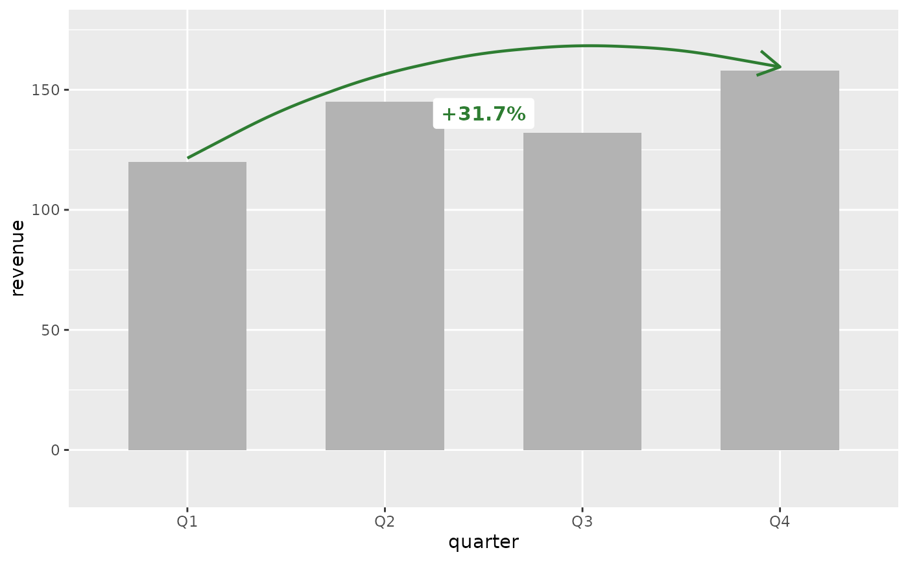
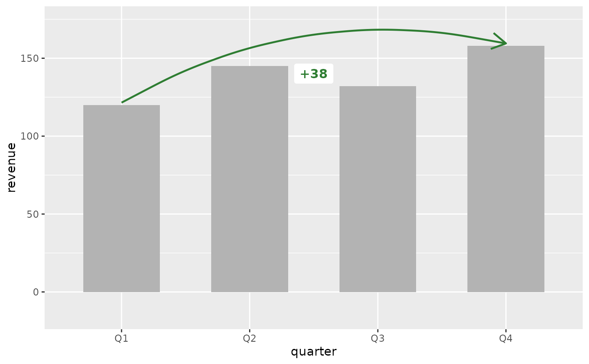
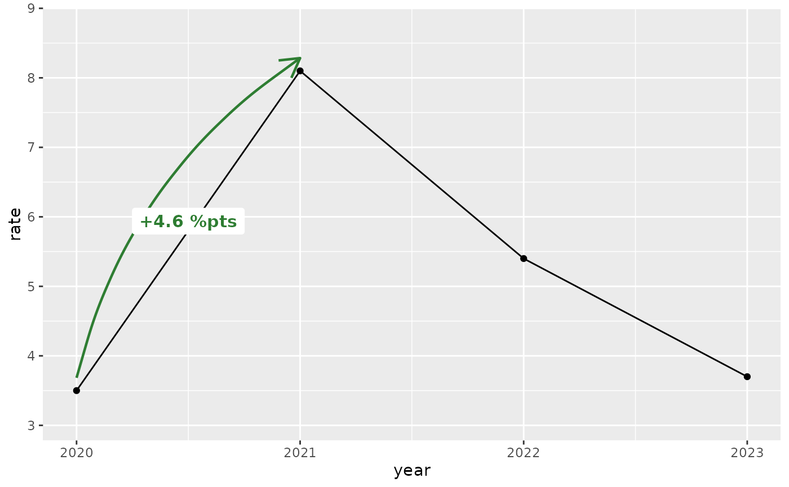
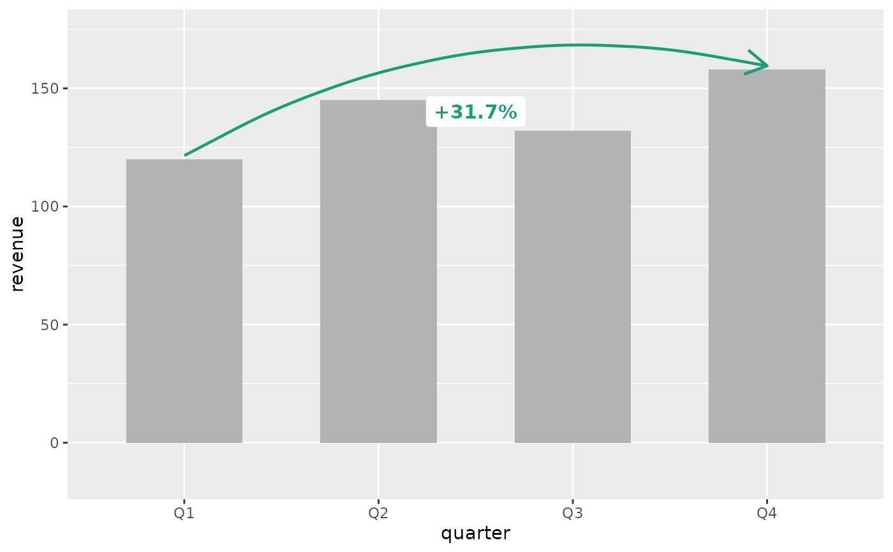
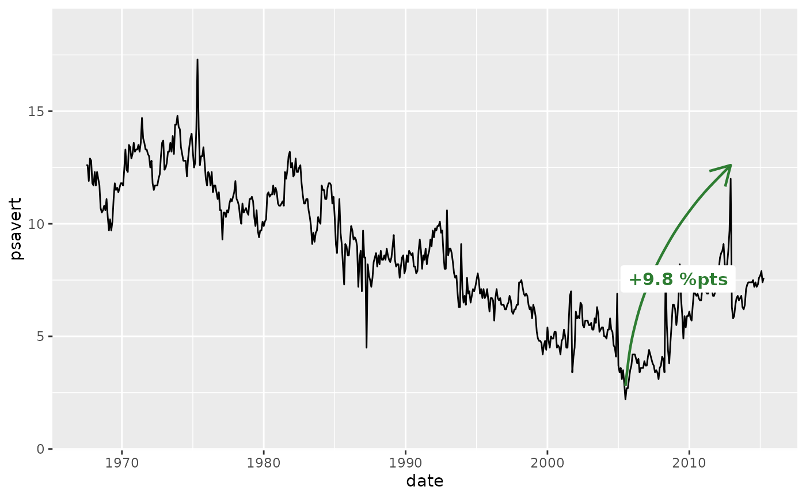
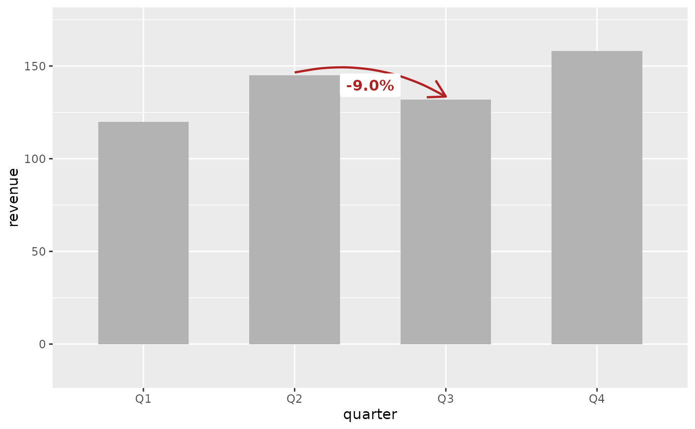
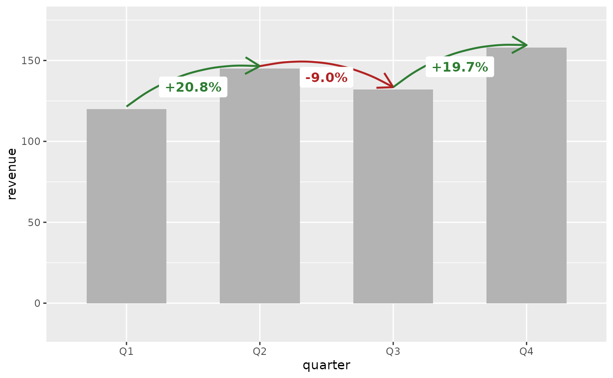
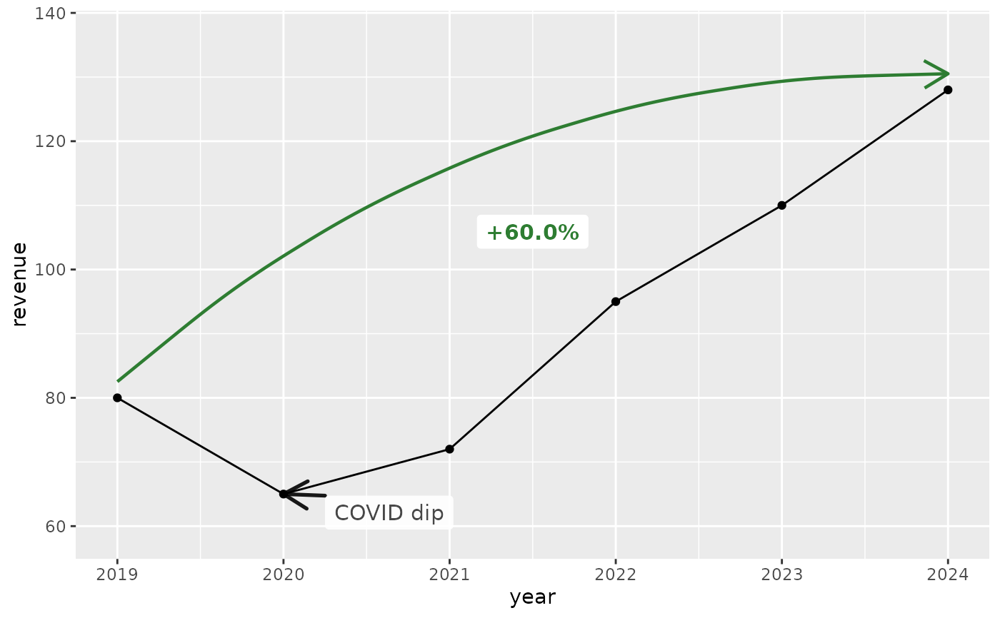
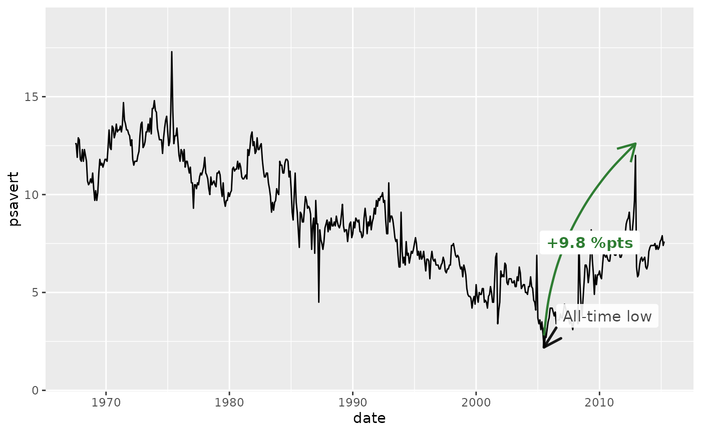

Annotate the change between two data points on a ggplot
Source:R/annotate-change.R
annotate_change.RdDraws a curved arrow between two data rows and labels the midpoint
with the computed delta. The label is color-coded: dark green for
increases, dark red for decreases, grey for no change. Built on top of
ggplot2::annotate().
Usage
annotate_change(
data,
from,
to,
value,
format = "percent",
colors = c(up = "#2E7D32", down = "#B22222", flat = "#808080"),
curvature = -0.2,
arrow_pad = 0.04,
expand_y = TRUE,
...
)Arguments
- data
A data frame. Should be the same data frame used in the ggplot. Must contain the columns mapped to x and y in the plot's
aes(), as well as the column specified invalue.- from
<tidy-eval> A filtering expression that identifies exactly one row of
datafor the start of the arrow. For example,quarter == "Q2". An error is thrown if the expression matches zero or more than one row.- to
<tidy-eval> A filtering expression that identifies exactly one row of
datafor the end of the arrow.- value
<tidy-eval> An unquoted column name indicating which numeric column to compute the change on. For example,
value = revenue.- format
How to format the delta label. One of
"percent"(default),"absolute","points", or"both". Percent change from a zero base value falls back to absolute with a warning. Percent change from negative values uses the raw formula and may be confusing; use"absolute"for data that can go negative. Use"points"when the data is already a rate or percentage (e.g., savings rate, market share) — it labels the difference in percentage points (e.g., "+9.8 %pts") instead of computing a misleading percent-of-percent.- colors
Named character vector of length 3 with hex color values for the arrow and label. Names must be
"up","down", and"flat". Defaults to dark green, dark red, and grey.- curvature
Numeric value controlling the curve of the arrow. Positive values curve right, negative values curve left. Defaults to
-0.2for a subtle leftward arc. Set to0for a straight arrow.- arrow_pad
Fraction of the y-axis range to lift both arrow endpoints above the data values, creating visible whitespace between the arrow and bars or points. Defaults to
0.04(4%). Set to0for no gap.- expand_y
Logical. If
TRUE(default) andcurvatureis non-zero, adds ascale_y_continuous(expand = ...)layer to prevent the curved arrow from being clipped at the figure edge. The expansion amount scales withabs(curvature). Set toFALSEto suppress this and control the y-axis expansion yourself.- ...
Additional arguments passed to the label layer (
ggplot2::annotate()withgeom = "label"). Use to override defaults likesize,fontface, orfill. Note: these do not affect the arrow segment. To change the arrow, usecolors.
Value
A list of ggplot2 layers (arrow, label,
coord_cartesian(clip = "off"), and optionally
scale_y_continuous(expand = ...)) that can be added to a plot
with +. The coord layer prevents the curved arrow from being
clipped at the plot panel boundary; the scale layer expands the
y-axis to accommodate the curve arc.
Details
The curved arrow may arc outside the default plot area. To prevent
clipping, this function automatically includes a
coord_cartesian(clip = "off") layer. If you need a different
coordinate system (e.g., coord_flip()), add it after
annotate_change() so it takes precedence, and set clip = "off"
on your coord to keep the arrow visible.
When expand_y = TRUE (the default), the function also adds a
scale_y_continuous(expand = ...) layer that pads the y-axis
proportionally to abs(curvature). If you set your own
scale_y_continuous() after annotate_change(), your scale
replaces the one from this function.
See also
annotate_callout() to label a single data point.
Examples
library(ggplot2)
revenue <- data.frame(
quarter = factor(c("Q1", "Q2", "Q3", "Q4"),
levels = c("Q1", "Q2", "Q3", "Q4")),
revenue = c(120, 145, 132, 158)
)
# Percent change (default)
ggplot(revenue, aes(x = quarter, y = revenue)) +
geom_col(fill = "grey70", width = 0.6) +
annotate_change(
revenue,
from = quarter == "Q1",
to = quarter == "Q4",
value = revenue
)

# Absolute change
ggplot(revenue, aes(x = quarter, y = revenue)) +
geom_col(fill = "grey70", width = 0.6) +
annotate_change(
revenue,
from = quarter == "Q1",
to = quarter == "Q4",
value = revenue,
format = "absolute"
)

# Percentage points (for data already expressed as rates)
rates <- data.frame(
year = 2020:2023,
rate = c(3.5, 8.1, 5.4, 3.7)
)
ggplot(rates, aes(x = year, y = rate)) +
geom_line() +
geom_point() +
annotate_change(rates, from = year == 2020, to = year == 2021,
value = rate, format = "points")

# Custom colors (e.g., corporate palette)
ggplot(revenue, aes(x = quarter, y = revenue)) +
geom_col(fill = "grey70", width = 0.6) +
annotate_change(
revenue,
from = quarter == "Q1",
to = quarter == "Q4",
value = revenue,
colors = c(up = "#1B9E77", down = "#D95F02", flat = "#7570B3")
)

# Date x-axis (time series) — use nudge on the callout for wide data
ggplot(economics, aes(x = date, y = psavert)) +
geom_line() +
annotate_change(
economics,
from = date == as.Date("2005-07-01"),
to = date == as.Date("2012-12-01"),
value = psavert,
format = "points"
)

# Showing a decline (red arrow, negative label)
ggplot(revenue, aes(x = quarter, y = revenue)) +
geom_col(fill = "grey70", width = 0.6) +
annotate_change(
revenue,
from = quarter == "Q2",
to = quarter == "Q3",
value = revenue
)

# Multiple change annotations (quarter-over-quarter)
ggplot(revenue, aes(x = quarter, y = revenue)) +
geom_col(fill = "grey70", width = 0.6) +
annotate_change(revenue, from = quarter == "Q1",
to = quarter == "Q2", value = revenue) +
annotate_change(revenue, from = quarter == "Q2",
to = quarter == "Q3", value = revenue) +
annotate_change(revenue, from = quarter == "Q3",
to = quarter == "Q4", value = revenue)
#> Coordinate system already present.
#> ℹ Adding new coordinate system, which will replace the existing one.
#> Scale for y is already present.
#> Adding another scale for y, which will replace the existing scale.
#> Coordinate system already present.
#> ℹ Adding new coordinate system, which will replace the existing one.
#> Scale for y is already present.
#> Adding another scale for y, which will replace the existing scale.

# Year-over-year growth on a line chart
annual <- data.frame(year = 2019:2024,
revenue = c(80, 65, 72, 95, 110, 128))
ggplot(annual, aes(x = year, y = revenue)) +
geom_line() + geom_point() +
annotate_change(annual, from = year == 2019,
to = year == 2024, value = revenue) +
annotate_callout(annual, where = year == 2020,
label = "COVID dip", position = "bottom-right")

# Combined with annotate_callout() on a time series
ggplot(economics, aes(x = date, y = psavert)) +
geom_line() +
annotate_callout(
economics,
where = date == as.Date("2005-07-01"),
label = "All-time low",
nudge = c(365, 1)
) +
annotate_change(
economics,
from = date == as.Date("2005-07-01"),
to = date == as.Date("2012-12-01"),
value = psavert,
format = "points"
)
